Copyright © 2025 United Security Providers AG
This document is protected by copyright under the applicable laws and international treaties. No part of this document may be reproduced in any form and distributed to third parties by any means without prior written authorization of United Security Providers AG.
DOCUMENTATION IS PROVIDED "AS IS" AND ALL EXPRESSED OR IMPLIED REPRESENTATIONS AND WARRANTIES, INCLUDING BUT NOT LIMITED TO ANY IMPLIED WARRANTY OF MERCHANTABILITY, FITNESS FOR A PARTICULAR PURPOSE OR NON-INFRINGEMENT, ARE DISCLAIMED TO THE EXTENT PERMISSIBLE UNDER THE APPLICABLE LAWS.
Table of Contents
List of Tables
The USP Network Authentication System® (USP NAS) is a network access control solution (NAC) which provides visibility of and secure access to your network. It does this by communicating with network equipment (switches, access points, routers), enumerating the connected endpoints (laptops, desktops, printers, IoT devices and more) and enforcing access control policies based on the endpoint type, user identity and other factors.
This installation guide provides a guideline to install the USP Network Authentication System® (USP NAS) in a virtualized environment.
Note that these instructions are based on USP NAS release 15.x.
The USP NAS Appliance has been tested to run in VMware ESXi, Microsoft Hyper-V and Oracle VirtualBox hypervisors. It has also been observed to work well in Nutanix, Proxmox, KVM/QEMU and other similar virtualization environments. Additionally, it supports running on bare-metal servers of the Dell PowerEdge 6xx series.
To install the USP NAS system, you first need to configure your hardware appliance or your virtual machine to boot from the USP NAS .iso file. After booting from the .iso, select the option "Install appliance operating system" in the bootloader menu. Installation will proceed without needing any user interaction. Partitions and filesystems will be created and the USP NAS System will be installed. The System will then restart automatically and boot the USP NAS operating system.
The network interface of the appliance and the default gateway can be set via the console menu.
After completing the initial network setup, you can access the web-based USP NAS GUI using a webbrowser of your choice (Google Chrome, Mozilla Firefox or Microsoft Edge are recommended) via the configured IP address URL https://X.X.X.X to continue with the configuration of the USP NAS application.
Create a virtual machine image with the following basic settings:
192.168.56.1/255.255.255.0)
Here is a best practice overview of the hardware requirements depending on the endpoints for USP NAS.
Table 2.1. USP NAS Hardware system requirements
| 1 - 5000 Endpoints | 5000 - 100000 Endpoints | |
|---|---|---|
Harddisk size | 50 GB | 140 GB |
RAM | 8 GB | 16 GB |
Processors cores | 2-4 | 8 |
For a quick and easy implementation of USP NAS, we recommend using a virtual machine variant with a single network card. It should be configured as a bridge to your existing network, so that network devices like switches can communicate with USP NAS.
Go to the networks settings of the desired hypervisor system and create a new virtual network cards or use an existing network card.
USP NAS can use one or multiple network adapters, e.g. to facilitate the separation of management and data traffic. In our example, we use a single network card only.
When booting for the first time, and only one network card is present, USP NAS will attempt to obtain an IP address via DHCP; this can later be changed in the console menu (see below). If more than one interfaces are present, they must be configured manually in the console menu.
In the following example, we will use the network 192.168.56.1/24 and assign the IP address 192.168.56.10 to USP NAS.
The following ports and protocols are used to ensure communication with USP NAS. We distinguish between mandatory and optional ports. Please ensure that your corporate firewall allows communication on these ports, and that routes to the necessary subnets are properly set up.
| Protocol | Port | Direction | Remarks |
|---|---|---|---|
SSH |
| Incoming | Admin CLI access, HA synchronization between two USP NAS instances |
SNMP |
| Bidirectional | Communication between netdevices and USP NAS |
SNMP Traps |
| Bidirectional | Communication between netdevices and USP NAS |
HTTPS |
| Incoming | Admin WebGUI access |
RADIUS Authentication |
| Bidirectional | Communication between netdevices and USP NAS, HA status check between two USP NAS instances |
RADIUS Accounting |
| Bidirectional | Communication between netdevices and USP NAS |
| Protocol | Port | Direction | Remarks |
|---|---|---|---|
SMTP |
| Outgoing | E-Mail (alerts, scheduled reports) |
DNS |
| Outgoing | Domain name resolving |
NTP |
| Outgoing | Time synchronization |
SNMP |
| Incoming | Status monitoring by external monitoring systems |
SNMP Traps |
| Outgoing | Monitoring/Alarming (e.g. Nagios, Incinga) |
HTTPS |
| Outgoing | Vendor code updates ( |
Syslog |
| Outgoing | Log forwarding (e.g. Syslog, Splunk, Elastic, OpenSearch) |
RADIUS Authentication |
| Outgoing | Communication with external RADIUS server (e.g. NPS) |
RADIUS Accounting |
| Outgoing | Communication with external RADIUS server (e.g. NPS) |
LDAPS |
| Outgoing | Communication with external LDAP server (e.g. Active Directory) for Web GUI/SSH login |
Download the desired USP NAS ISO image from USP Connect (if you have a United Security Providers AG customer account), or from a specific download link provided by your USP NAS partner/distributor.
Choose the image as optical drive medium in the VM settings. After the virtual machine is prepared and the USP NAS ISO file is selected as boot drive, you can start the virtual machine.
On the console you should see the following installation prompt:
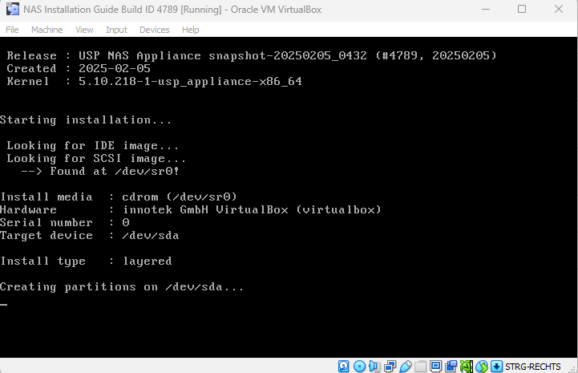
USP NAS will install itself automatically and reboot. Once the installation is completed, the following login prompt will be displayed on the console:
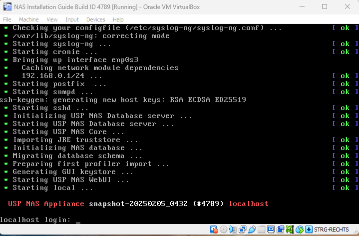
Login with the user "console" and password "console" to access the USP NAS console main menu. The console menu provides a variety of options to configure basic USP NAS system settings.
Here you can configure the network interface of the USP NAS appliance.
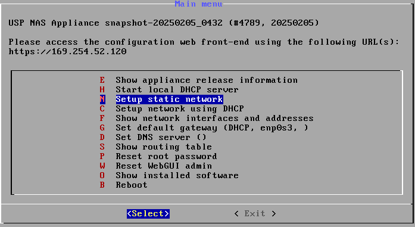
192.168.56.10
255.255.255.0
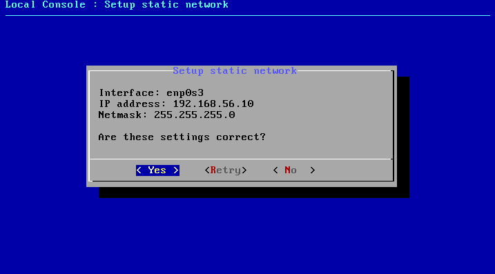
You also might want to define a default gateway to ensure packets get routed correctly.
192.168.56.1
Exit the console menu.
USP NAS can now be accessed at https://192.168.56.10/ via browser from your client.
Since USP NAS Release 14.0, a new, modern GUI is available, offering a more user-friendly interface. It also features a setup wizard which makes setting up USP NAS easier and more intuitive.
Therefore, you can directly switch to the modern GUI by clicking on "Switch to modern GUI"; no login credentials needed.
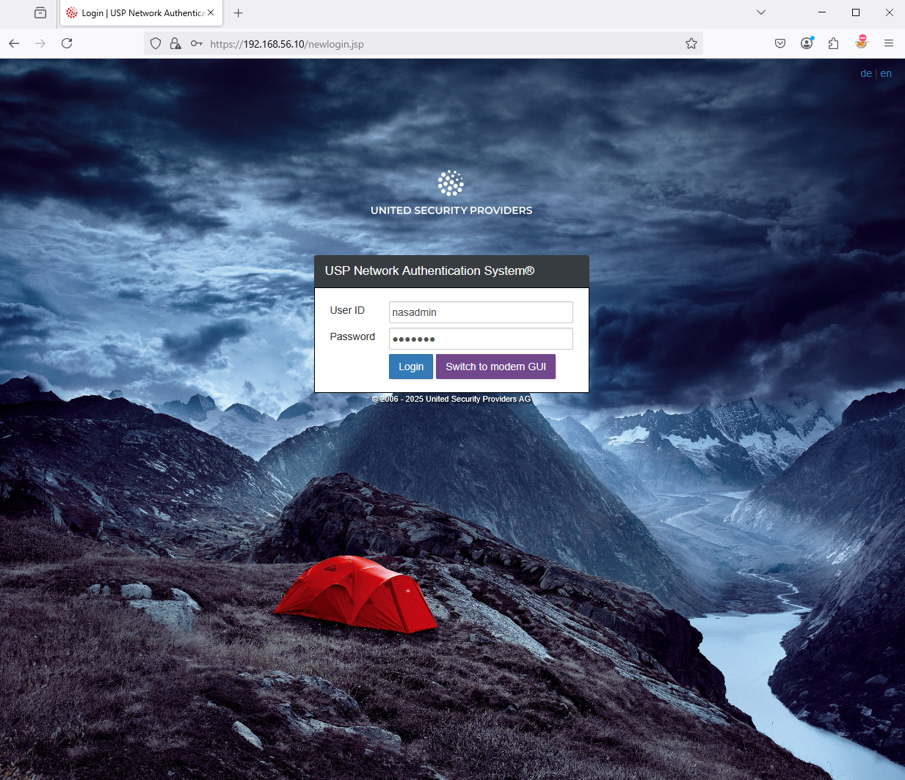
The setup wizard, part of the modern Web GUI, will appear when you try to log in after a fresh installation of USP NAS. Click Start to continue.
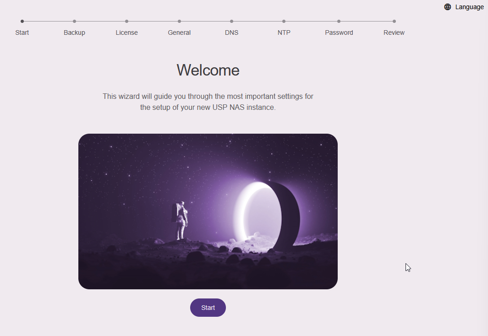
If you have a backup file from a previous USP NAS installation, you can restore it by clicking on "Browse for file". Otherwise, go ahead and click on "Skip" in case of a new USP NAS Installation.
Import a valid USP NAS license file by clicking on "Browse for file" to continue the setup procedure.
In the next section "General Information" you can put additional information and set the hostname for your USP NAS device, for example:
In the next section, you can add the IP addresses of your DNS servers. You can also add them later on the network configuration page of the Web GUI.
In the next section, you can add the IP addresses or hostnames of your NTP servers used for time synchronization. You can also add them later on the network configuration page of the Web GUI.
In the penultimate section, you must change the password of the default user nasadmin. Enter the new passwort twice to confirm and click Change Password.
Finally, in the section "Review your configuration", you can check all settings entered and confirm with "Apply Changes":
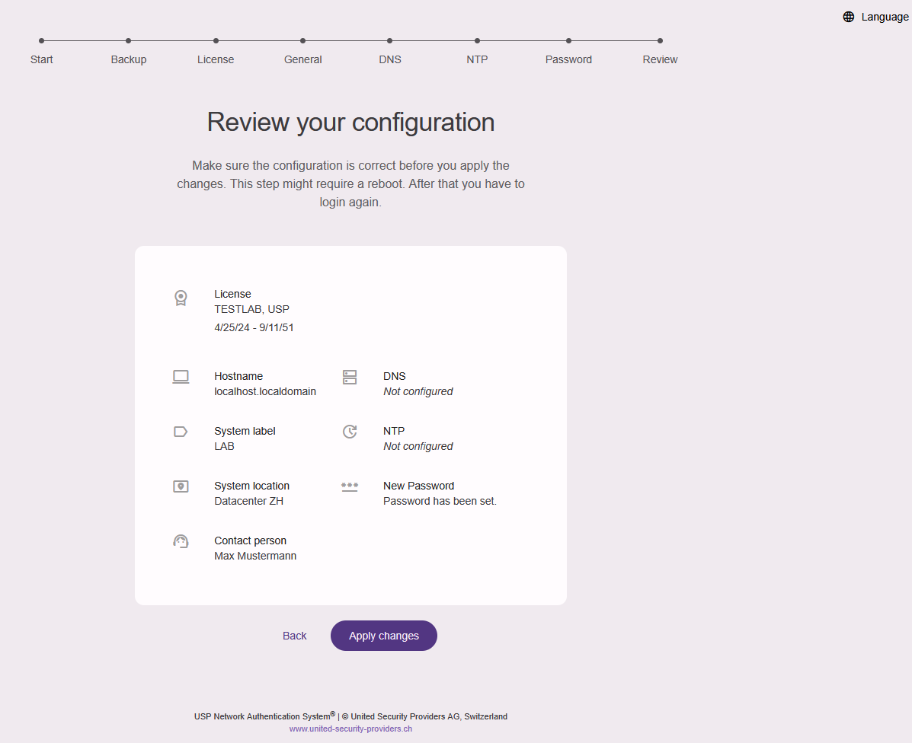
The USP NAS Webserver will restart now, this can take up to one minute.
The login mask will appear. Use the username "nasadmin" to log in with your newly defined password.
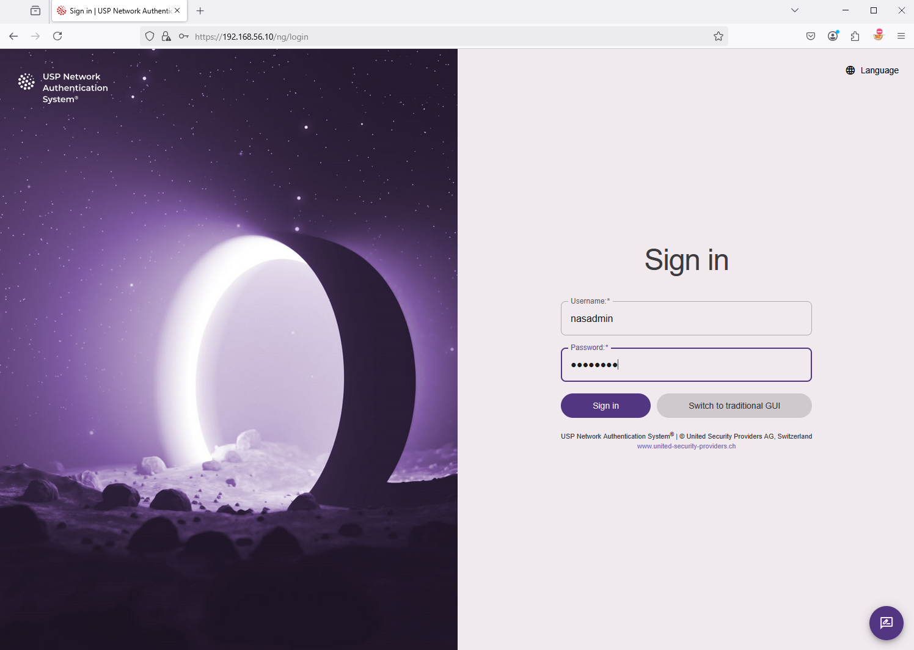
Press the red power button at the top of the USP NAS Web GUI to activate the NAS operation mode.
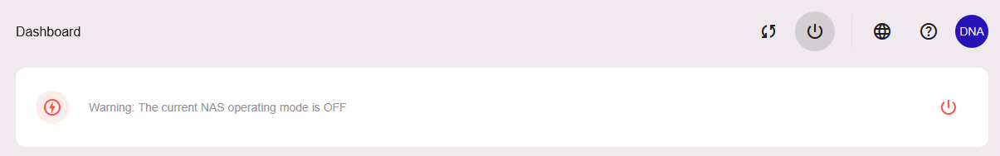
Select the menu item "SYSTEM" and click on "Apply" to confirm:
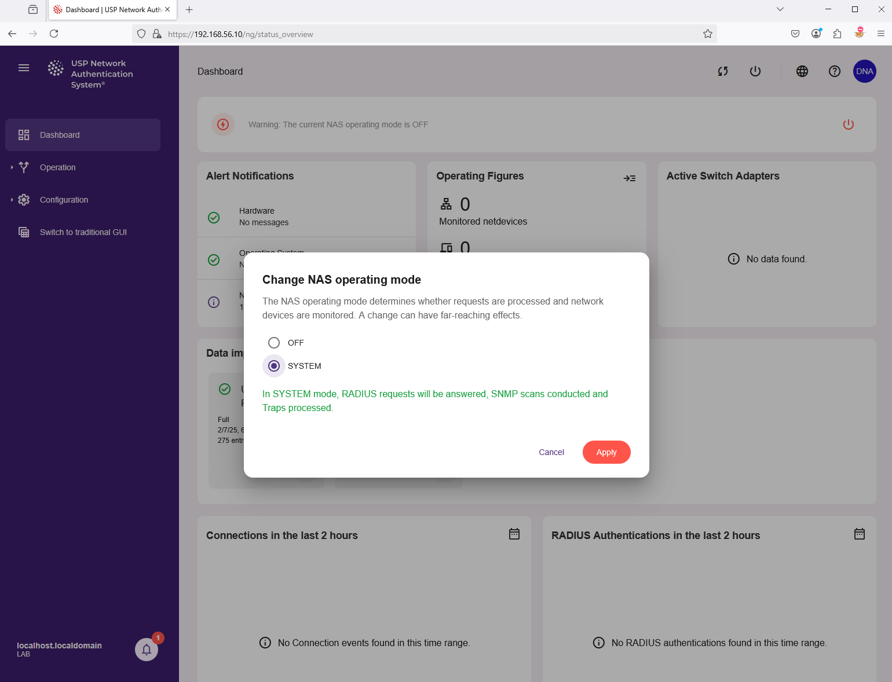
Then click again on "Apply" to confirm twice:
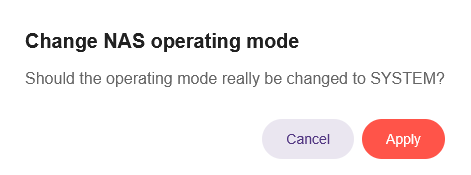
You are now ready to register netdevices like network switches and inventorize endpoints like laptops and printers in USP NAS.
Don’t forget to take a snapshot of the VM and give it an appropriate label, e.g. "Clean Setup" so you can easily return to this state for a fresh installation.
USP NAS communicates with network devices like switches via SNMP and RADIUS.
USP NAS can use either SNMP or RADIUS protocols or both to communicate with a switch.
Here is a brief description on how to add a new switch device to USP NAS.
In the main menu on the left side, navigate to "Operation" → "Netdevices" and on the top click the plus + sign.
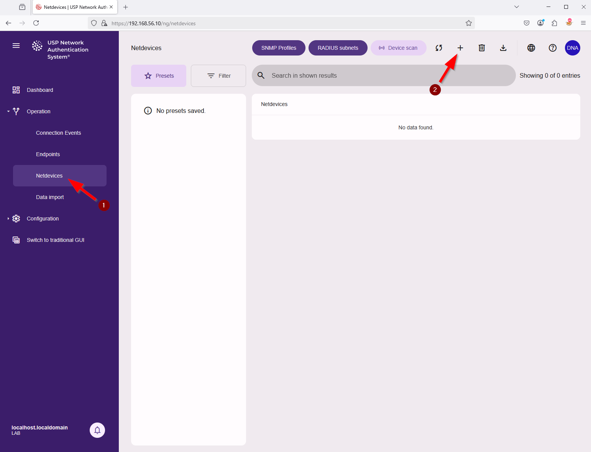
In the next window "Register netdevice" add all necessary information for the new switch, for example:
A default SNMP profile with version 2c and community strings public/private is pre-configured.
Additional profiles can be added via the button SNMP Profiles.
Make sure that SNMP is activated on the switch and that the corresponding community strings (a kind of shared-secret, although not encrypted) or username and passwords (in the case of SNMPv3) are configured.
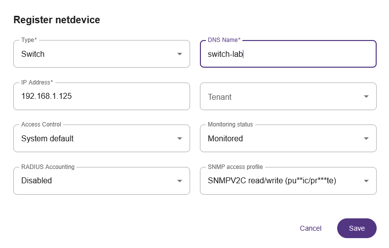
USP NAS will now start scanning the new netdevice shortly.
You should see the information "Unknown / Waiting for scan". Wait until the status changes to "No netports defined" in yellow.
A missing netports warning means that we now need to configure the netports of this switch, that is, the uplinks/downlink ports of this switch, so USP NAS knows which ports must be ignored for access control.
Click on info button (Netdevice details) for this Netdevice. Then in the tab on top click on Ports to see the list of interfaces. The action menu at the end of each line lets you define this port as a netport.
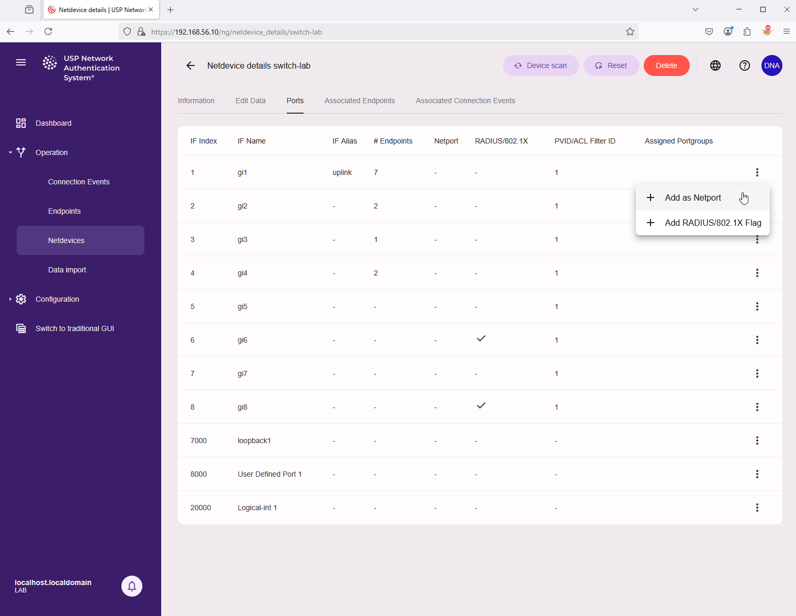
USP NAS will scan the switch again, and the status indicator in the overview will change to green.
In case of a communication error, you should check the SNMP settings of the switch and the SNMP access profile in USP NAS, as well as any firewall rules that might block SNMP traffic (port 161 and 162).
To receive SNMP traps from the switch, you need to configure the switch to send traps to the IP address of the USP NAS appliance.
It is also necessary to define the SNMP trap community. USP NAS currently only supports SNMPv1/SNMPv2c traps.
The SNMP trap community is a global setting, which can be configured on the application configuration page (navigate to Configuration → Application → SNMP).
The default value is trapcom.
Changing this value requires a restart of the USP NAS core service.
This is indicated by the notification icon in the bottom left corner.
If your switches support 802.1X authentication, you can optionally configure RADIUS authentication on the switch to identify and authenticate endpoints connected to the switch. This proces differs from switch to switch, so please consult the documentation of your switch vendor. It generally involves the following steps:
USP NAS can either use an external RADIUS server like Windows NPS, or make use of its built-in RADIUS server based on FreeRADIUS. To configure the RADIUS server, navigate to Configuration → Application → RADIUS/802.1X and tick the corresponding checkboxes or fill the necessary parameters in the form. We recommend that the setting "Automatically add EAP users to the inventory if the certificate is valid" is set enabled, so that clients with a valid certificate are auto-inventoried.
You also need to upload one or more valid CA certificates to the USP NAS appliance, which are used to validate the client certificates. This can be done by navigating to Configuration → Certificates and clicking the + sing on top of the page. Here you can import certificates in PEM format. Make sure that the checkbox RADIUS CA Certificate is ticked.
These changes will require a restart of the USP NAS core service, which can be done on the Maintenance page.
Switches and access points which are configured for RADIUS authentication can be self-registered in USP NAS. This means that they will automatically appear in the list of netdevices in USP NAS after they have sent their first RADIUS request to authenticate a client device.
This is controlled through a setting called RADIUS subnets where you can define the networks (subnets) a netdevice is allowed to self-register from. By default, all networks are allowed. Navigate to Operation → Netdevices → RADIUS subnets to fine-tune this setting. An SNMP access profile can be linked to a RADIUS subnet to allow automated SNMP scanning of the netdevice once it has self-registered.
Once a switch has been scanned successfully, connected endpoints are listed in the tab "Associated Endpoints" on the netdevice details page. A list of all detected and/or inventoried endpoints is available by navigating to "Operation" → "Endpoints".
USP NAS will scan all netdevices every 20 minutes by default. This can be changed in the application configuration page.
When switches send a trap to USP NAS, the endpoint status will be updated immediately and a connection event will be logged.
To see all connection events, navigate to "Operation" → "Connection Events".
To test this functionality properly, it is advisable to disconnect and reconnect a physical port/cable on the corresponding switch.
You should then see the corresponding events under Connection Events after a few seconds.
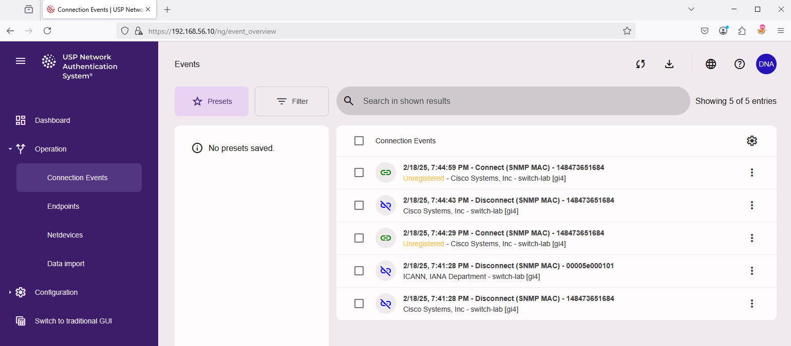
Clicking on the connection event entry will reveal a detailed view of the event.
Please note that it might take a while for a switch to register traffic from a new endpoint and update the information in its bridge table. USP NAS will retry several times to get the information from the switch in case an empty status is returned.
Connections events can also be viewed for a specific netdevice. Navigate to "Operation" → "Netdevices" and click on the info button (Netdevice details) for this Netdevice. In the tab on top click on "Associated Connection Events" to see the related events.
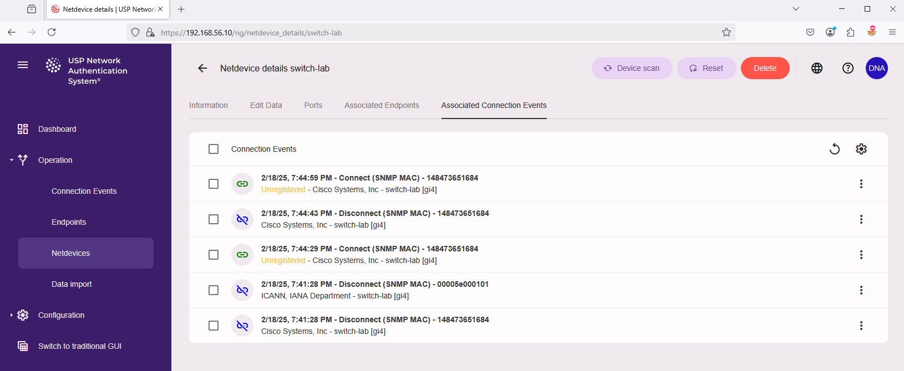
USP NAS has a built-in inventory system to keep track of endpoints (to be) connected to the network (client device like a laptop, desktop PC, printer, IoT device, …). If an endpoint is inventoried, it can be used to enforce access control policies, e.g. to allow or deny access to the network based on the endpoint type.
By default, USP NAS will not enforce any access control policies for unknown endpoints, but this could be changed once a sufficient number of endpoints are inventoried.
There are several possibilities to add an endpoint to the USP NAS inventory.
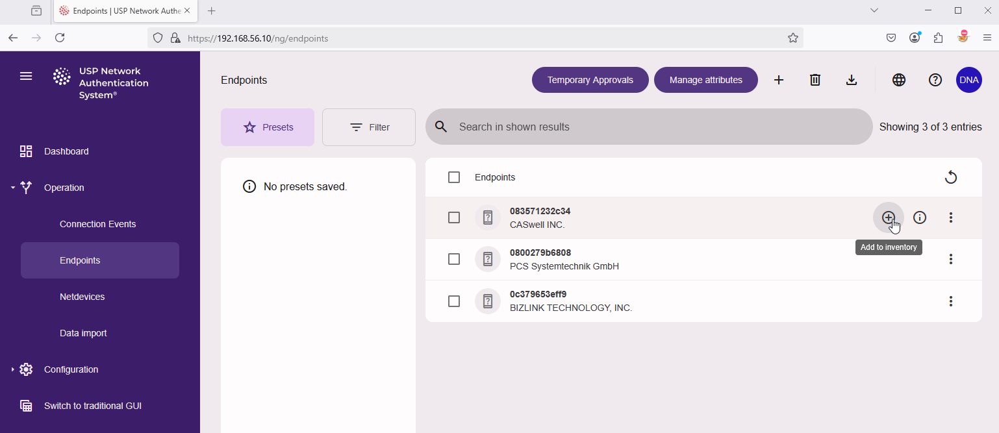
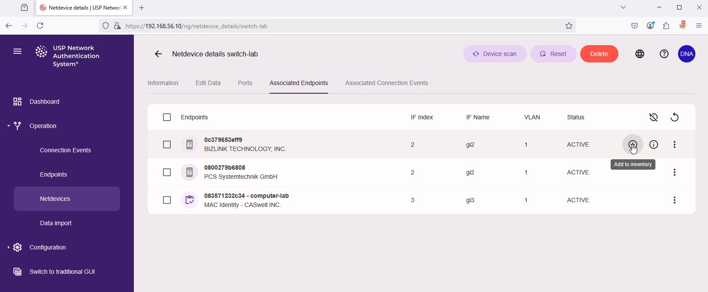
In the popup dialog "Add Endpoint to inventory" add all necessary information for this new endpoint and click on "Add to inventory" to confirm, for example:
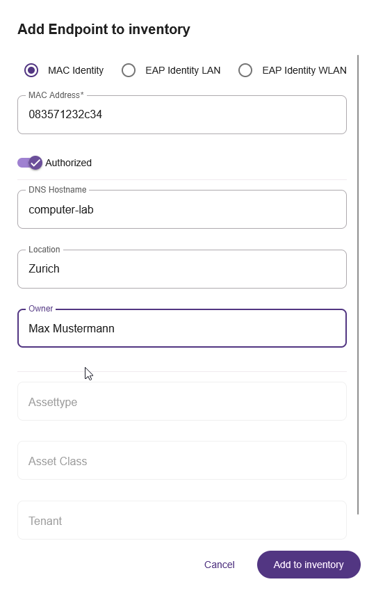
The endpoint will now be inventoried and can be used for access control policies. Creating access control policies is outside the scope of this guide, please consult the general USP NAS documentation for more information.
Please note: The system update can be executed both through the modern and traditional Web GUI. We recommend using the modern Web GUI.
USP NAS update images can be downloaded from USP Connect using your customer account.
To install the update, navigate to "Maintenance" in the main menu on the left side:
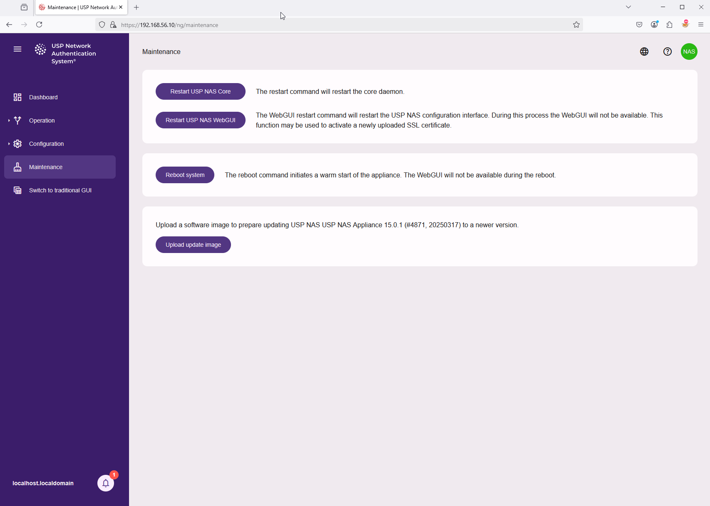
Click on "Upload update image" and select the USP NAS software image file from local computer, for example: nas-15.0.1-4871-x86_64-update.img.
The upload of the software image starts directly.
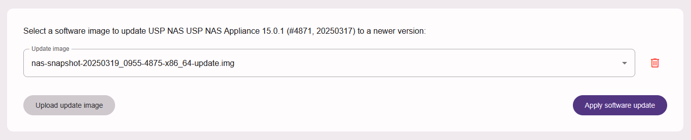
Once the file is uploaded, you can click on button "Apply software update" to start the installation. This might take a while to complete. The user interface will not be usable, and the USP NAC service will not process any authentication requests or execute netdevice scans during this time.
Please note: The USP NAS Appliance will be rebooted automatically during the update process.